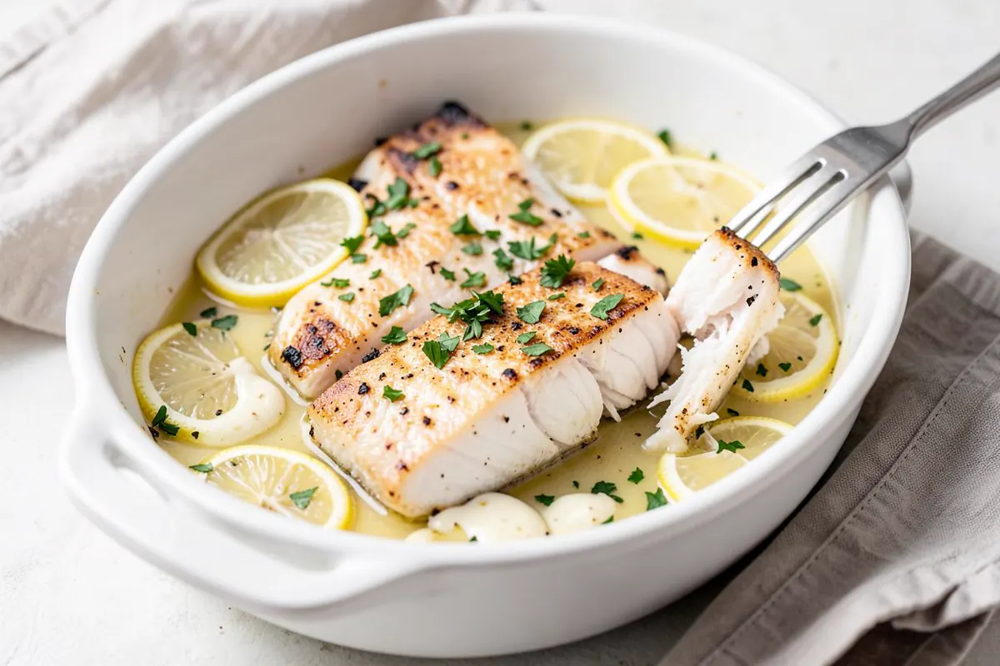

Lemon Garlic Baked Cod

Illustrative image.
Cod is lean and mild, which makes it a good canvas for butter, garlic and lemon, and also means it dries out quickly if you look away. This method bakes it at 400 F in a butter and lemon glaze and checks it at twelve minutes.
Four fillets serve four, and the whole dish takes under half an hour, including the oven heating. It is a good option for a weeknight when you want something light but still satisfying.
Ingredients
- 4 cod fillets (about 6 oz each, 1 inch thick)
- 2 tbsp olive oil
- 2 tbsp melted butter
- 3 cloves garlic, minced
- Zest and juice of 1 lemon
- 1 tsp paprika
- 1/2 tsp salt
- 1/4 tsp black pepper
- 2 tbsp chopped fresh parsley
- Lemon slices, for serving
Instructions
- Preheat the oven to 400°F (200°C) and lightly oil a baking dish.
- Pat the fillets dry and place them in the dish. Season with the salt, pepper and paprika.
- Whisk the olive oil, butter, garlic, lemon zest and lemon juice and spoon over the fish.
- Bake for 12 to 15 minutes, until the fish is opaque and flakes easily with a fork, and reaches 145°F (63°C).
- Sprinkle with parsley and serve with lemon slices and the pan juices.
- Fillet thickness decides the cooking time. Check at 12 minutes.
- Do not overbake, as cod dries out quickly.
- Pat the fish dry for the best flavor.
- Add cherry tomatoes and capers to the dish.
- Top with buttered breadcrumbs for the last 5 minutes.
Why this recipe works
A hot oven and a shallow dish allow the fish to cook through quickly without sitting in liquid. Spooning the butter mixture over the fillets rather than pouring it around them keeps the flavour on the fish, and a short bake preserves the flaky texture.
Tips for success
- Pat the fillets dry and season them before adding the butter, so the seasoning sticks.
- Check the thickest part at twelve minutes; thin fillets may be done sooner.
- Spoon the pan juices over the fish before serving so nothing is wasted.
Substitutions that work
- Haddock, pollock or halibut can replace the cod, adjusting the time for thickness.
- Add cherry tomatoes and capers to the dish for a brighter, more Mediterranean version.
- Top with buttered breadcrumbs for the last five minutes for a crisp crust.
Storage and make-ahead
Refrigerate leftovers for two days. Flake cold cod into a salad or a pasta dish rather than reheating it, since it dries out quickly. Fresh fish should be cooked the day you buy it or frozen immediately.
Serving suggestions
Serve with rice, crushed potatoes or crusty bread, and a green vegetable such as asparagus or broccoli. A squeeze of lemon at the table is essential.
Judging when the fish is done
Cod goes from translucent to opaque very quickly, and the window between perfectly cooked and dry is narrow. Look for the point where the thickest part just begins to flake when you press it with a fork, and the centre still looks glossy rather than chalky. An instant-read thermometer should read about 145 F. If your fillets are uneven, tuck the thin tail ends underneath so the thickness is roughly even across the dish. Let the fish rest in the dish for two minutes after it comes out of the oven; it will finish cooking in its own heat and the butter will settle.
Frequently asked questions
How long should cod bake?
About twelve to fifteen minutes at 400 F for a one-inch fillet. Thinner pieces need less, and the fish is done when it flakes easily with a fork.
Why did my cod turn out dry?
It was overcooked. Cod goes from translucent and flaky to dry in a couple of minutes, so check early and pull it as soon as it separates.
Can I use frozen cod?
Yes. Thaw it completely in the refrigerator overnight and pat it very dry before baking, or the glaze will slide off.